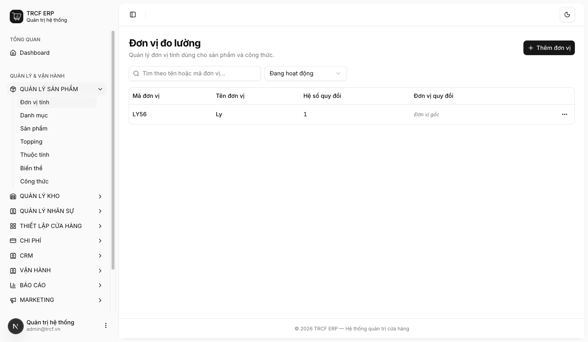
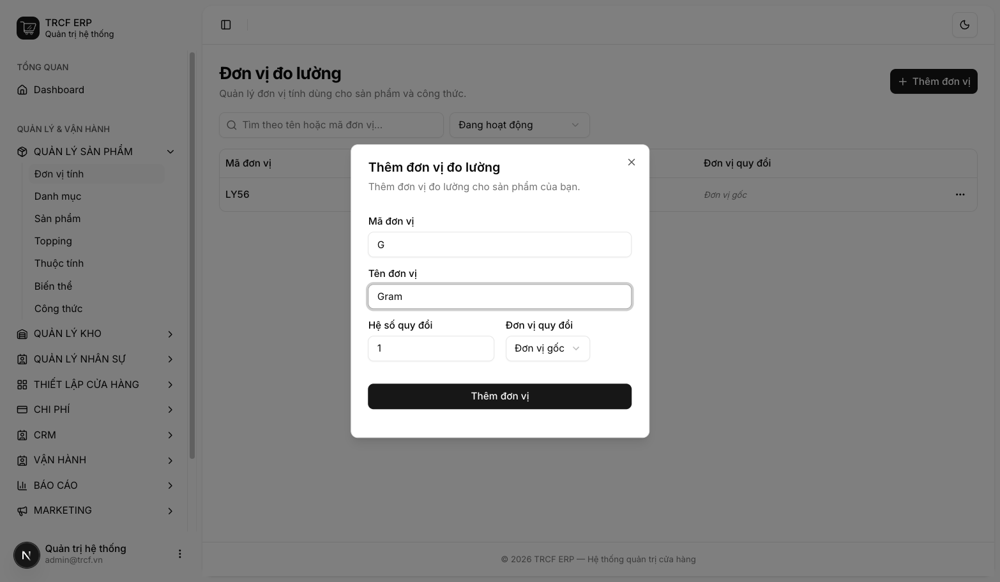
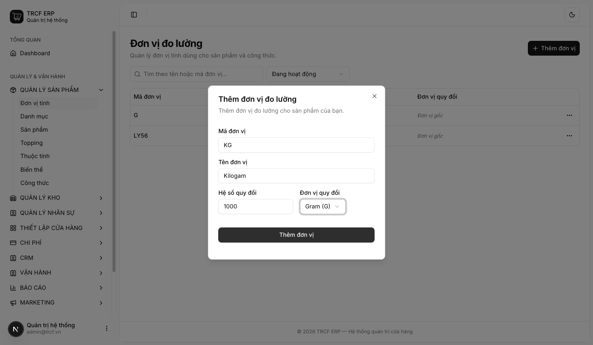
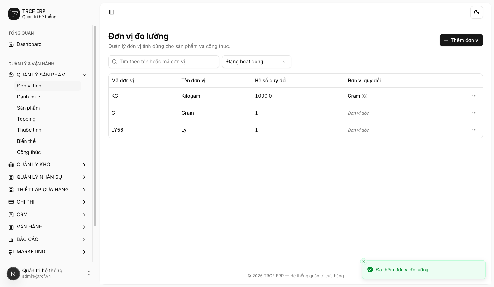

Chương 2 · Thiết lập kho hàng, sản phẩm
2.2 Thiết lập đơn vị tính (UOM)
1. Đường dẫn vào chức năng
Menu trái: Quản lý sản phẩm → Đơn vị tính (địa chỉ /uoms).
2. Ví dụ nền và các bước thực hiện
Ví dụ: quán nhập cà phê theo kg, pha chế trừ theo gram.
- Đơn vị gốc: "G" (Gram), hệ số 1.
- Đơn vị lớn hơn: "KG" (Kilogam) = 1000 Gram.
- Nhập 5 kg → hệ thống ghi tồn 5000 g.
Bước 1Mở trang Đơn vị tính
- Bấm Quản lý sản phẩm ở menu trái.
- Chọn Đơn vị tính.
- Xem danh sách đơn vị hiện có.

Bước 2Thêm đơn vị gốc trước
- Bấm Thêm đơn vị.
- Mã đơn vị: nhập "G".
- Tên đơn vị: nhập "Gram".
- Hệ số quy đổi: giữ "1".
- Đơn vị quy đổi: giữ "Đơn vị gốc".
- Bấm nút Thêm đơn vị trong hộp thoại.

Bước 3Thêm đơn vị lớn hơn
- Bấm Thêm đơn vị.
- Mã đơn vị: nhập "KG".
- Tên đơn vị: nhập "Kilogam".
- Hệ số quy đổi: nhập "1000".
- Đơn vị quy đổi: chọn "Gram (G)".
- Bấm nút Thêm đơn vị trong hộp thoại.

Bước 4Kiểm tra kết quả
- Thấy thông báo “Đã thêm đơn vị đo lường”.
- Dòng "KG": hệ số 1000, quy đổi về "Gram (G)".
- Dòng "G": hiện Đơn vị gốc.

3. Giải thích các trường
| Trường | Điền gì | Bắt buộc |
|---|---|---|
| Mã đơn vị | Ngắn, viết hoa. VD LY, KG, G | ✅ |
| Tên đơn vị | VD "Ly", "Kilogam", "Gram" | ✅ |
| Hệ số quy đổi | Bằng bao nhiêu đơn vị gốc. Đơn vị gốc điền 1 | ✅ |
| Đơn vị quy đổi | Đơn vị gốc: để "Đơn vị gốc". Đơn vị lớn hơn: chọn đơn vị gốc | — |
Hiểu trước khi điền
| Khái niệm | Nghĩa | Khai thế nào |
|---|---|---|
| Đơn vị gốc | Đơn vị nhỏ nhất dùng lưu tồn. VD sữa lấy Gram | Hệ số 1, để "Đơn vị gốc" |
| Đơn vị quy đổi | Đơn vị to hơn. VD KG = 1000 Gram | Hệ số 1000, chọn quy đổi về Gram |
Bộ đơn vị mẫu cho quán
| Mã | Tên | Hệ số | Quy đổi về | Dùng cho |
|---|---|---|---|---|
LY | Ly | 1 | (gốc) | Đồ uống bán ra |
G | Gram | 1 | (gốc) | Nguyên liệu khô |
KG | Kilogam | 1000 | Gram | Nhập hàng khô |
4. Lưu ý quan trọng
⚠️
Hệ số bị khoá khi đơn vị đã được dùng.
- Đã gắn sản phẩm hoặc công thức: không sửa được.
- Sửa hệ số làm tồn kho và giá vốn cũ bị sai.
- Cần đơn vị khác: tạo mới, lưu trữ cái cũ.
⚠️
Hệ số phải lớn hơn 0.
- Hệ số 0 làm mất sạch số lượng khi quy đổi.
⚠️
Xoá đơn vị là xoá vĩnh viễn. Không dùng nữa thì chọn Lưu trữ.
💡
Mã đơn vị không phân biệt hoa thường: đã có "KG" thì không tạo thêm "kg".
💡
Chỉ khai đơn vị quán thật sự dùng, danh sách dài dễ chọn nhầm.